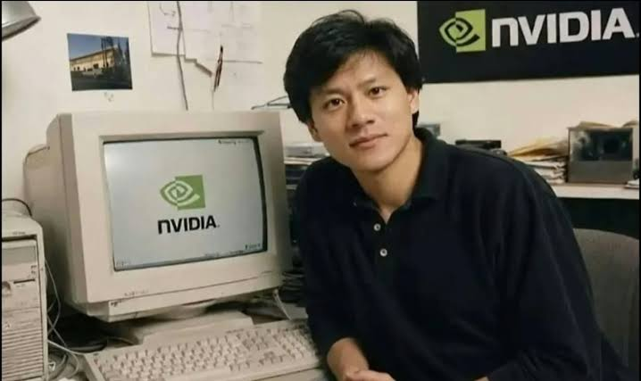
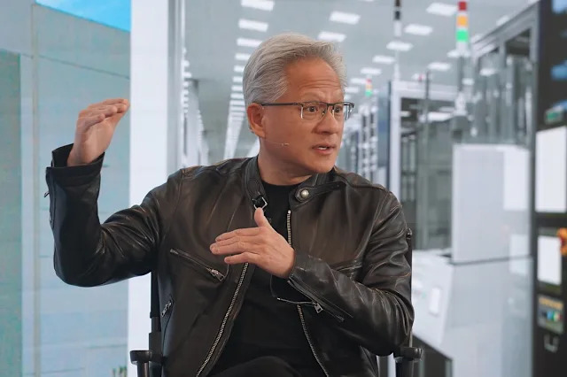
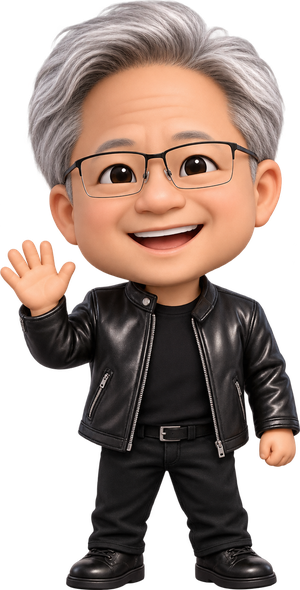
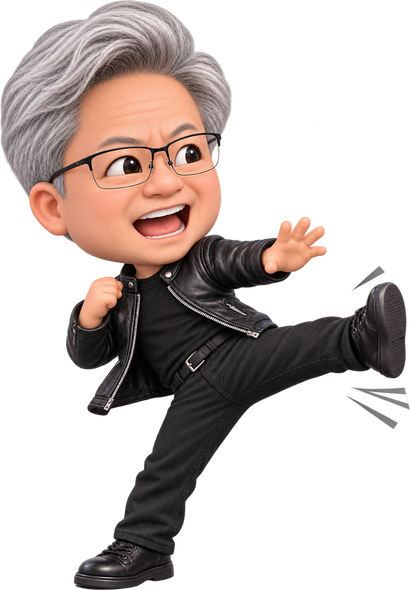
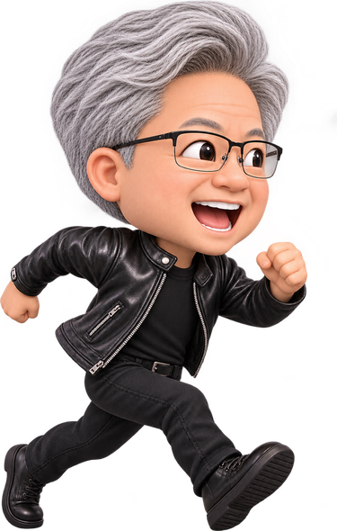

8
組織管理｜CHAPTER 8
溝通
Communication：從定義、模型，到團隊與跨文化
開講前插播一則快訊
黃仁勳回來了！
董事會
一致通過
11/12
請辭 NVIDIA 執行長
11/23
董事會一致通過復職
即刻恢復總裁、執行長與董事身分
「我等不及要回去工作了。」
── 黃仁勳
董事會的理由
滿意他的「坦誠」與領導能力 → 坦誠，正是今天要講的溝通
Jensen 該留在財務部，還是去技術部？
你（財務部）
留下 Jensen
研擬收費程序
公司優先方案
?
他是誰？點我翻開

Jensen
電腦高手
他（技術部主管）
調走 Jensen
開發新產品
也是公司優先方案
他師傅說：
「那你就找一個比 Jensen 更好的人給我！」
溝通是什麼？
拉丁字源
communis
分享・建立共識
傳遞 ⇄ 接收的雙向進行式
Shannon & Weaver（1949）
一種社會行為
Emery（1960）
一種藝術
舒緒緯（1990）
讓對方做出預期反應
謝文全（1988）
有目的的活動
溝通的四大功能
控制
遵守職權與規範
職權層級
激勵
定目標、給回饋、強化行為
目標設定理論
情感表達
分享挫折與滿足
滿足社交需求
資訊流通
提供資訊、協助決策
評估可行方案
電梯簡報
沒有投影片、只有幾十秒：麥肯錫拿來當面試考題
電梯簡報
39 秒、從 1 樓到 101 樓：你能說服主管買下這支筆嗎？
第 1 關｜電梯門關上了
電梯樓層
1F
剩 39 秒
微溝通 ①
鎖定
對話要點
主管
「早！你有什麼事嗎？」
A
「主管，我找到一支智慧筆，能手寫轉文字、自動存檔，想跟您介紹一下。」
B
「主管，業務部每月花 20 小時在紙本合約上，我找到一支筆能把這段時間省下來。」
C
「主管，我有個提升效率的點子，想約您下週給我 30 分鐘簡報。」
第 2 關｜主管聽懂了嗎？
電梯樓層
34F
剩 26 秒
微溝通 ②
確認對方
是否理解
主管
「喔……所以你是要幫業務部換一批新筆？」
A
「不只是換筆，重點是每月省下 20 小時的紙本作業，正好對上您這季縮短簽約時間的目標。這樣說清楚嗎？」
B
「對對對，就是換筆，很便宜的。」
C
「我等一下寄 20 頁的規格書給您，您看完就懂了。」
第 3 關｜電梯快到了
電梯樓層
68F
剩 13 秒
微溝通 ③
保證對方
一定記得
主管
「我等一下還有會，你最後要我記住什麼？」
A
「重點有五個：價格、功能、保固、廠商評價、導入流程，我很快說一下……」
B
「沒關係，我整理一份完整報告放您桌上。」
C
「一句話：1.5 萬、試辦一個月，省下 20 小時。您覺得哪一組先試？」
101F 叮！你說服主管了嗎？
電梯樓層
101F
39 秒用完
說服率
＝三關加總
第 1 關
A 18
B 34
C 10
① 鎖定要點
第 2 關
A 33
B 8
C 14
② 確認對方理解
第 3 關
A 22
B 8
C 33
③ 讓對方記得
90–100%
「好，下週就開始試辦。」
65–89%
「有點意思，把數字整理好再來找我。」
65% 以下
「我再想想。」電梯門開了
訊息怎麼從一個人傳到另一個人？
?
發送者是誰？
發送者
?
接收者是誰？
接收者
1 想表達的意思
2 編碼
想法 → 語言、文字
訊息
3 管道：說話・Email・Line
4 解碼
符號 → 自己的理解
5 懂了！原來是這樣
回饋
6 回饋：點頭、回覆、提問，確認有聽懂
7 雜音
誤解・分心・語意・文化差異
正式溝通的三個方向
向下溝通
上 → 下
最常見、最傳統
下指令、給回饋
解釋決策，承諾 ×2
向上溝通
下 → 上
意見箱、調查表
講重點、附佐證
容易訊息流失
橫向溝通
同層級
省時間、促協調
交換資訊、聯誼
越級 → 惡性衝突
兩位科技 CEO 怎麼溝通？
黃仁勳｜NVIDIA 前執行長
60
位直屬主管、不開一對一會議
「CEO 的直屬部下越多，公司的層級就越少。」
重要的事對所有人一起講，大家拿到同樣的資訊
層級少 → 基層的聲音不用層層轉述，向上溝通變短
馬斯克｜2018 年寄給 Tesla 全體員工的信
「溝通應該走完成工作的最短路徑，而不是透過指揮鏈。」
堅持指揮鏈的主管，「很快就會到別的地方工作」
不是在講向下溝通：是要大家越級、橫向直接找人
非正式溝通：葡萄藤（grapevine）
沒有計畫、難以辨別，口耳相傳、不留證據，消息像藤蔓一樣到處延伸
1
機動性
隨時開始、隨時結束
2
無壓力
打破層級、地位平等
3
無法禁止
不受時間空間限制
4
快速
比正式管道傳得更快
5
面對面
容易耳語相傳
影片時間｜約 30 秒
你身邊有這種人嗎？
他說的是
「菜有點鹹。」
對方聽成
「你嫌我煮得不好。」
問題出在
對方從一開始
就沒打算聽
三種溝通方式
口語溝通
優：快速、當下回饋
缺：轉述容易被曲解
非言語溝通
肢體、表情、聲音
紅綠燈、警鈴等號誌
書面溝通
優：有證據、持久
缺：費時、回饋慢
劉騏銘？
語調不一樣就會有不同意思
這個管道，排在第幾層？
點一下，看它飛去哪
資訊豐富性
資料處理能力
高
低
低
高
中
最豐富
最精簡
高
低
低
電子郵件
面對面
數據報告
電話
傳單公告
正式報告
兩條線方向相反：越豐富的管道，越難一次處理大量資料。
電子郵件和信函、便條同一層。
溝通策略八說
60%
靠正確的策略
40%
靠執行力
價值說
認知・傳遞・創造
效率說
精簡、省溝通成本
資源說
找對話題資源
結構說
依身分調整說法
競局說
競爭又合作
統治說
建立權威與中心
風險說
選對方向與用詞
成本說
善用網路降成本
哪一種策略最能提高溝通滿意？
未用
成本
資源
價值
上行溝通
未用
成本
資源
價值
平行溝通
未用
成本
資源
價值
下行溝通
三個層級，排名都一樣
成本 > 資源 > 未用 > 價值
成本策略：善用網路科技管道
資源策略：知識分享、授權最關鍵
價值策略：反而低於不用策略
團隊發展四階段
1
形成期
團隊狀態
彼此陌生、缺互信
領導者要做
破冰、溝通整合
?
?
?
?
?
?
嗨…？
你是誰？
……
破冰：兩兩一組互相認識
你負責哪一塊？
我做硬體！
平常怎麼聯絡？
開個 Line 群！
你擅長什麼？
我會寫程式！
團隊發展四階段
2
風暴期
團隊狀態
個性浮現、有摩擦
領導者要做
化解衝突、防內鬥
碰！
碰！
碰！
冷靜一下……
團隊發展四階段
3
規範期
團隊狀態
有默契、自動分工
領導者要做
給跨領域新挑戰

☀ 早上 8:00 進公司
☾ 晚上 10:00 才下班
Photo: Coolcaesar / CC BY-SA 4.0
團隊發展四階段
4
表現期
團隊狀態
穩定、吸引人才
領導者要做
放手、轉型創新
♥
♥
♥
♥
團隊裡的九種角色
?
ROLE 01
點我翻牌
ROLE 01
先鋒者
特殊效果
點子爆發
團隊卡關時，丟出新點子解決難題
弱點
重解決問題、不重過程細節，容易跟成員爭辯
?
ROLE 02
點我翻牌
ROLE 02
實行者
特殊效果
使命必達
願意做別人不想做的瑣碎工作，讓任務在時程內完成
弱點
對新事物比較遲鈍，想法偏保守
?
ROLE 03
點我翻牌
ROLE 03
情報收集者
特殊效果
情報網
帶回外界變化和競爭對手的動向，必要時當團隊的談判家
定位
團隊取得外部資訊和資源的集中地
團隊裡的九種角色
?
ROLE 04
點我翻牌
ROLE 04
評估者
特殊效果
理性判官
評估每個方案的可行性，團隊需要方向時給出關鍵意見
弱點
容易給人冷酷、安靜的感覺
?
ROLE 05
點我翻牌
ROLE 05｜領導型
協商者
特殊效果
團隊藍圖
協調分工、綜合大家的意見，在不同時期確立新目標
定位
團隊中最佳的成員領導，深受信任與認同
?
ROLE 06
點我翻牌
ROLE 06｜領導型
驅策者
特殊效果
全速前進
驅策每位成員達成目標，拿下整個團隊的勝利
弱點
一隊有兩三位驅策者，容易多頭馬車、團隊崩解
團隊裡的九種角色
?
ROLE 07
點我翻牌
ROLE 07
潤滑者
特殊效果
和平使者
化解爭執中的不悅，減少摩擦、維持團隊和諧
弱點
遇到團隊危機時容易優柔寡斷，缺少魄力
?
ROLE 08
點我翻牌
ROLE 08
專家
特殊效果
專業加持
補上團隊缺少的知識和技術，用專業處理難題
定位
幫團隊了解任務的特性與內容
?
ROLE 09
點我翻牌
ROLE 09
完成者
特殊效果
細節中的魔鬼
抓出任務裡的小瑕疵，督促大家準時甚至提早完成
弱點
容易悲觀、不喜歡改變，凡事事必躬親
防禦式 vs. 非防禦式
防禦式溝通：造成障礙
服從式
「你對，我錯」
被動、退縮，常見於低位階
支配式
「你錯，我對」
挑釁、攻擊，常見於高位階
非防禦式溝通：建立關係
自主決斷
有主見、直接、不否定對方
專注、務實、誠實、能自我控制
效果
恢復秩序與和諧
被抨擊時也不引發對方防禦
Catherine 四原則
01
定義情境
02
澄清立場
03
了解感受
04
聚焦事實
這句話是上司說的，還是下屬說的？
上司說的
下屬 Joe 說的
大家投票：誰會這樣說？
委過他人
把責任推給別人
權力展示
用威脅來控制
戲謔
冒犯人的玩笑
貼標籤
說人有缺陷
欺騙
說謊、造假象
奚落
貶低對方
誤導訊息
只說對自己有利的
提出質疑
製造不信任
Hofstede 國家文化五構面
權力距離
Power Distance
低：共享權力
高：接受不平等
不確定性避免
Uncertainty Avoidance
低：容忍變動
高：多規定、求穩定
個人 vs. 集體主義
Individualism / Collectivism
個人：重自我（美國）
集體：重團體（日本）
男性 vs. 女性氣質
Masculinity / Femininity
男性：競爭、成就
女性：關係、生活品質
長期 vs. 短期取向
Long / Short-term Orientation
長期：儲蓄、堅持
短期：眼前利益
8.7 跨文化的溝通
影響跨文化溝通的四項因素
人際關係與距離
高人際
口頭承諾就算數、站得近
低人際
白紙黑字、保持距離
權力分配與距離
高權力距離
聽從順服、少提意見
低權力距離
共享權力、共訂規則
個人主義 vs. 集體主義
個人主義
依貢獻分配
集體主義
避免衝突、平均分配
性別認知差異
父權社會
男性優先繼承與承擔
女權社會
女性人選較有優勢
8.8 溝通的雜音
訊息在路上會被什麼干擾？
發送者
感知
各自解讀不同
過濾
報喜不報憂
語言
符號沒有共識
語言障礙
術語
行話、縮寫
語言障礙
模稜兩可
一句話多種解釋
資訊超載
訊息多到處理不完
接收者
蕭伯納
「溝通的最大問題在於它是被實現的幻覺。」
OB 專欄
掌握「微溝通」
17
秒
人對話語記憶最深刻的時間
1
鎖定對話要點
2
確認對方是否理解
3
保證對方一定記得
39 秒
電梯到 101 頂樓
18 分
一場 TED 演講
140 字
Twitter、微博上限
12 字
信件標題最好不超過
800 字
一頁 A4 容量
個案分析
回到 Jensen ：五個溝通技巧

1
強調關係套老交情
2
選對管道面對面最有效
3
提出理由理由就是柱子
4
需要 vs. 想要must 與 want 分清楚
5
降低讓步成本讓他敢輸給你
「把 Jensen 給我，我幫你訓練湯姆。」
不跳進他的遊戲規則，改玩「需要／想要」的遊戲
個案分析
解決衝突的四種模型
增加資源
把餅做大，但不保證你一定多分
取交集
求同存異，找雙方的最大公約數
掛鉤
掛進別的議題：A 換 B（諂媚／勒索）
切割
拆開組合：價格、規格、數量、付款、交貨
談判學最重要的一點
「贏者不全贏，輸者不全輸」
總結
回到章前的三個問題
1
溝通的意涵和目的？
分享、建立共識；控制・激勵・情感表達・資訊流通
2
「上對下」和「下對上」有什麼不同？
向下：解釋決策、傾聽 ｜ 向上：講重點、附佐證
3
怎麼讓團隊溝通更有效率？
看懂團隊階段與角色、用非防禦式溝通、選對管道與策略
期刊導讀｜AI 聊天機器人陪練諮商技巧
導入聊天機器人輔助「諮商技巧」課程教學之效果研究
作者
謝麗紅、陳亭妍、張瑋珊、劉嘉吉、鄧志平
單位
國立彰化師範大學 輔導與諮商學系、物理學系
期刊
《教育心理學報》，2025 年，56 卷 3 期，681–708 頁（臺師大教育心理與輔導學系出版）
類型
大學課程的教學實踐研究：把 AI 放進一門真實的必修課，看學生學得怎麼樣
研究背景與目的
為什麼要做？
諮商技巧一定要「開口練」才學得會，但新手不能直接拿真的個案練習，會有倫理風險，也會讓學生很焦慮。
原本的做法
醫學和社工常請真人扮演「標準化個案」，效果不錯，但又貴又耗時，一次也演不了太多種情況。
研究目的
改用 AI 聊天機器人扮演模擬個案，放進「諮商技巧」課程，看看學生的諮商能力和同理心有沒有進步。
研究設計與研究對象
研究設計
「單組前後測」：同一班學生，上課前測一次、上完一學期再測一次，比較分數有沒有進步。
資料分析
「混合方法」：量表分數做統計（量化），再加上學生的反思札記和訪談（質性），兩邊互相對照。
研究對象
中部某大學諮商系大三、修「諮商技巧」必修課的學生，共 35 人，男女約 1：3。這是他們第一次上實務課。
課程怎麼上？
教學內容
共 14 週，每週練一個技巧：簡述語意、情感反映、同理心、場面構成、探問、摘要、立即性、自我揭露、面質、綜合練習。
聊天機器人
作者團隊自己開發。學生點開網站，先看個案背景，再用說話或打字跟虛擬個案晤談，畫面會提示目標並即時回饋。
課堂搭配
上半堂老師用上週的錄音和逐字稿示範新技巧；下半堂學生上台或分組演練，錄音、共編逐字稿再討論。
用什麼測量？
個別諮商能力評量表
量表（問卷），上課前後各填一次。共 8 個分量表，例如專業行為、深層互動、基本溝通、理論基礎；信度 α = .76–.90。
傑佛遜同理心量表
量表（問卷），前後各填一次。原本是醫護人員版，作者改成諮商版；20 題，分成觀點取替、情感關懷、設身處地 3 個分量表。
同理心反思札記
練習次數過半時，學生寫下這段時間的改變與覺察；由助教匿名收集，老師不經手。
焦點團體訪談
期末後由研究助理做半結構訪談，問學習經驗和建議；老師交出成績後才開始分析，避免影響學生。
量化：成對樣本 t 檢定（SPSS）比較前後測 ｜ 質性：Hycner（1985）現象學內容分析
量化結果：能力進步了，同理心卻沒有
| 個別諮商能力 | 前測 | 後測 | t | 結果 |
|---|---|---|---|---|
| 總分 | 89.36 | 101.89 | 6.65 | 顯著進步 *** |
| 過程技能 | 31.14 | 37.66 | 7.61 | 顯著進步 *** |
| 深層互動 | 9.14 | 11.74 | 8.46 | 顯著進步 *** |
| 訊息互動 | 10.33 | 12.36 | 5.58 | 顯著進步 *** |
| 基本溝通 | 11.67 | 13.56 | 5.84 | 顯著進步 *** |
| 概念形成技能 | 10.01 | 12.16 | 6.81 | 顯著進步 *** |
| 專業行為 | 11.99 | 13.03 | 3.53 | 顯著進步 * |
| 理論基礎 | 11.27 | 12.43 | 2.96 | 顯著進步 * |
| 個人化技能 | 11.79 | 12.74 | 2.92 | 顯著進步 * |
| 人格傾向 | 13.16 | 13.87 | 1.91 | 未顯著 |
諮商能力
總分從 89 進步到 102，8 個分量表中有 7 個顯著進步，只有「人格傾向」沒有。
同理心量表
總分 119 → 118，沒有顯著差異；「情感關懷」甚至顯著下降，作者認為值得再探討。
練習次數
課後跟機器人練越多次，期末成績越高（r = .435，p < .05）。
質性結果：學生怎麼說？
優勢① 適合新手
機器人不評價、不批判，沒有同學在看，新手比較敢開口；完成目標會有成就感，「有點像玩遊戲」。
優勢② 有步驟引導
每個技巧都有說明、示範句和提示，學生知道一場諮商的架構，練起來不迷惘。
優勢③ 個案很豐富
每週換不同議題的個案，學生期待「這週個案發生什麼事」。
挑戰① 不夠有彈性
有時像在猜關鍵字，「一句話只能達成一個目標」，少了跟個案同在的感覺。
挑戰② 表情場景單一
個案表情變化少、場景重複，很難從表情讀出非語言線索。
挑戰③ 辨識不靈敏
意思一樣但換個說法就判定不過，語音偵測也還不夠準。
研究限制、建議與我的看法
作者的限制
聊天機器人一定要搭配其他教學方法，不能單獨取代傳統的諮商員訓練。
作者的建議
語料庫再擴充、外表更像青少年個案、場景更像諮商室；也可以推廣到不同階段的諮商員。
我的觀察
只有一個班、沒有對照組，進步也可能來自老師教學或同儕演練，不一定全是機器人的功勞。
連回本章「溝通」
簡述語意、情感反映，就是溝通模型裡的「解碼」和「回饋」；AI 提供一個不怕犯錯的練習對象。
8
Q & A
謝謝聆聽
歡迎提問與討論
【學術誠信與 AI 使用切結聲明】
1.本人承諾在撰寫本報告及作業過程中，嚴格恪守國立臺北科技大學學術誠信守則。
2.報告及作業中主要應用 AI 模型：Claude Opus 5.5（Anthropic），Q 版人物圖像以 ChatGPT（OpenAI）生成。AI 協助整理課本內容、查證文獻、製作投影片與互動網頁，所使用之對話紀錄均完整保留，可供查核；報告中之論述、引用文獻與最終內容，皆經本人閱讀、審核與修改，並由本人負責。
學生簽名：
日期：
年月日


踢飛！
請大家用手機投票：上司說的，還是下屬說的？